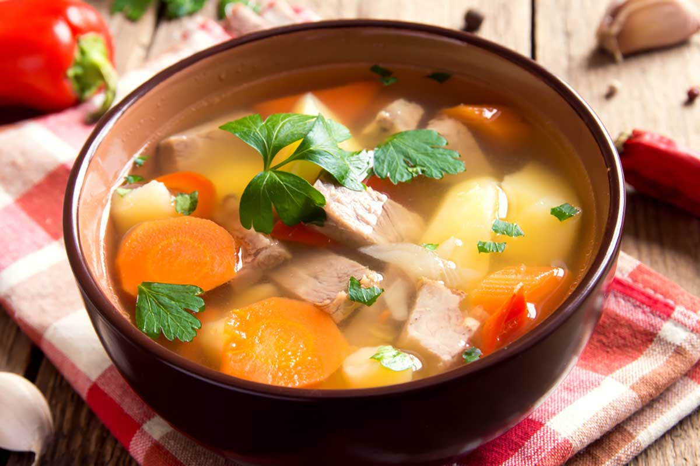

Description

A meat-prepared soup useful in many recipes.
Ingredients
- Beef meat
- Carrots
- Fine salt
- Pepper
- Celery
- Onion
Steps
- Cut carrots and celery, split the onion in half and put it in a heated pan.
- Brown it for some minutes.
- Add meat, carrots and celery to a pan, add here the onion and let it boil, cooking it for 3 hours at medium heat. Remove the impurities that come on top.
- Filter the soup, splitting it from meat and vegetables.
Return to Main page